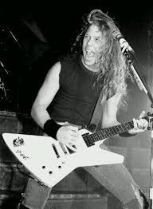

Band Members
James Hetfield
- Born: 03/08/1963
- In Band: 1981 - Present
- Plays: Guitar, Vocals
Born in California, James Hetfield is one of the founding members of Metallica and serves as the band's frontman. Hetfield also writes most of the lyrics for Metallica's songs including popular tracks such as Master of Puppets, One and Enter Sandman. Hetfield is also known for his custom ESP guitars which sport a flying V design.
Kirk Hammett
- Born: 18/11/1962
- In Band: 1983 - Present
- Plays: Lead Guitar
Briefly a member of popular thrash metal band Exodus, Kirk Hammett has been a member of Metallica ever since. A fan of Horror movies, Hammett has many gutairs depicting artwork from classics such as Dracula and Frankenstein. Some of Metallica's most memorable solos stem from Hammett, the famous solo from One being a highlight.
Lars Ulrich
- Born: 26/12/1963
- In Band: 1981 - Present
- Plays: Drums
Originally wanting to be a professional tennis player, Danish Born Lars Ulrich is the co-founder and drummer of Metallica. In addition to drumming, Ulrich is heavily involved in the business and promotion side of the band acting as the off-stage face of the band who frequentley does press interviews. Lars Ulrich is also famous for his unique duoble pedeal bass drum.
Robert Trujillo
- Born: 23/10/1964
- In Band: 2003 - Present
- Plays: Bass
Starting his bass playing carrer in Bands such as Suicidal Tendencies and Ozzy Ozzbourne, Californian born Robert Trujillo is Metallica's longest serving bassist being a member of the band for 16 years as of 2019. Trujillo tends to do finger style playing and is known for his "massive chords". He also was part of an experimental supergroup caled Mass Mental.
Ex Band Members
Cliff Burton
- Born: 10/02/1962
- In Band: 1981 - 1986 (his death)
- Played: Bass
Cliff Burton was Metallica's first full time bassist and was known for his intricate bass solos such as Anesthesia Pulling Teeth. A fan of classical music, Burton was the driving force behind some of Metallica's more complex tracks such as Orion. Burton died in a tragic bus accident in Sweden when the band's tour bus was flipped off the road due to black ice. The band still regularly performs (Anesthesia) Pulling Teeth as a tribute to him.
Jason Newstead
- Born: 04/03/1963
- In Band: 1986 - 2001
- Played: Bass
Starting off as the frontman of thrash metal band Flotsam and Jetsam, Michigan native Jason Newstead joined Metallica as a replacement for the late Cliff Burton in 1986. He also contributed a few basslines to the Metallica (the album) most notably My Friend Of Misery. However, wanting to focus more on his sideproject Echobrain and eperiment more, Jason left the band in 2001 after the live album SandM.
Dave Mustaine
- Born: 13/09/1961
- In Band: 1981 - 1983
- Played: Lead Guitar
Mustaine is already a legendary name in the thrash metal due to him being the frontman of the band Megadeth. Megadeth are known for their blistering and intricate guitar solos. Mustaine parted ways with Metallia and was replaced by Kirk Hammett before Metallics's debut album Kill 'Em All so he doesn't appear on any of their albums however he did recieve some songwriting credits.
Link To Megadeth's Official Website